Strong in simulation, and on a real robot.
Evaluated across three simulation benchmarks and a real robot.
| Benchmark | Split | Success |
|---|---|---|
| LIBERO | seen | 98.8 |
| LIBERO-Plus | unseen | 85.8 |
| RoboTwin — clean | seen | 85.8 |
| RoboTwin — randomized | unseen | 75.7 |
| RoboCasa365 | seen | 48.1 |
| Real robot — novel environments | unseen | 70.0 |
Full comparisons against prior work are in the paper.
A single goal says where. A chain says how.
World action models predict future visual dynamics and actions together. Dense video rollouts are expensive; collapsing the future into one final-goal frame is cheap but leaves the whole execution path unspecified. ProWAM sits between the two: a short, ordered chain of sparse sub-goals, each pinned to a point along task progress.
Video expert
Action expert
-
1
Read the scene
The current camera frame and the instruction go in. That frame is the origin of progress — everything downstream is measured relative to it.
-
2
Pick the milestones
Instead of one final goal, the model asks for the scene at a few points along the way — a tenth of the way through, a third, halfway. Training samples how many, so one model serves any number at test time.
-
3
Imagine them, all at once
The video expert generates the whole chain in a single pass. Each slot is told which point along progress it stands for, so the chain comes out ordered rather than as independent guesses.
-
4
Act toward the chain
The action expert reads the observation and the imagined milestones, and emits a chunk of actions. The video side never reads action tokens, so its work can be reused while only the action head is refined.
-
5
Re-anchor and repeat
After executing part of the chunk the model looks again. The new frame becomes the new origin, so the same point along progress now names a different target. The plan is re-grounded as the scene moves.
Progress is relative, so the plan re-anchors every replan.
The first replan and a later one from the same episode. Each starts from a fresh observation — that frame is r = 0, so the same r = 0.7 names a different target as the scene moves.
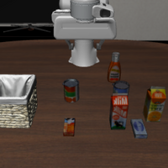
observe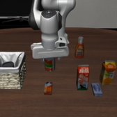
imagine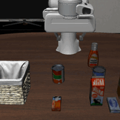
execute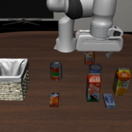
observe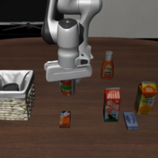
imagine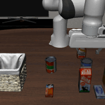
execute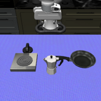
observe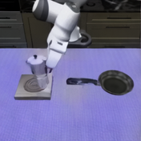
imagine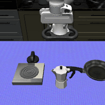
execute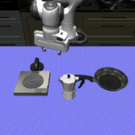
observe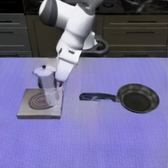
imagine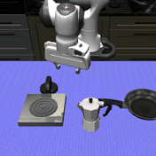
execute observe
observe imagine r = 0.3
imagine r = 0.3Planning that was never taught, only learned.
Stage 1 sees only action-free video — no actions, no policy, no simulator. Given a first frame and an instruction it is asked for the scene at a chosen progress point. Drag the slider: LIBERO and RoboTwin were never in its training data, yet the imagined milestones advance in step with the real trajectory.
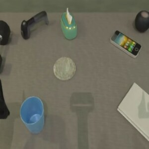
“put the light blue cup on the wooden coaster”RoboTwinunseen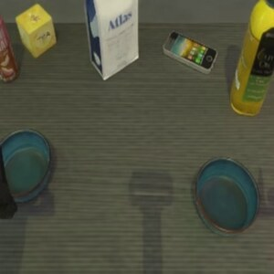
“slide the food bowl onto the ceramic bowl”RoboTwinunseen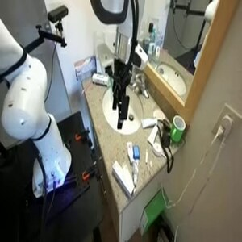
“push the top of the bottle left of the tap”DROIDseenNearer plans generalize better. More sub-goals are nearly free.
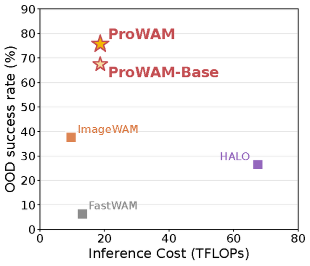
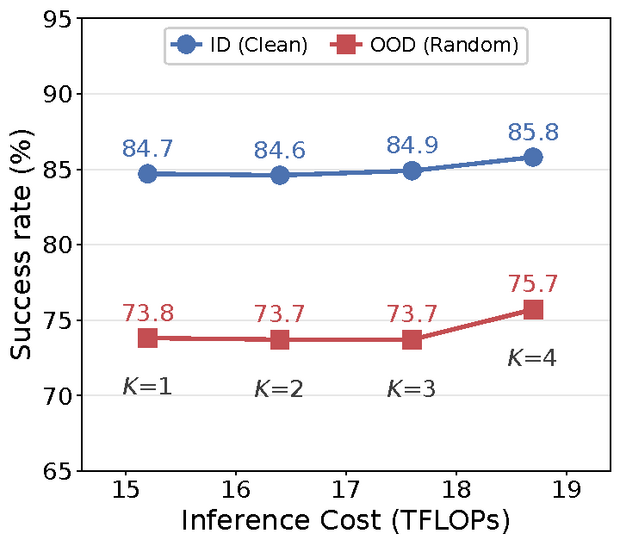
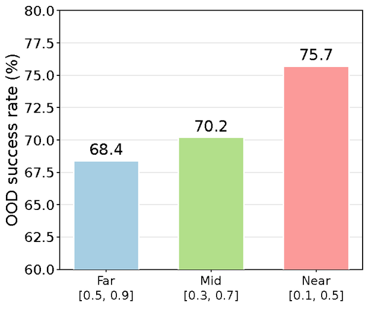
BibTeX
@inproceedings{zhang2027prowam,
title = {World Action Modeling with Progressive Visual Planning},
author = {Zhang, Fei and An, Zhaochong and Frost, Duncan and Wang, Yikai
and Liu, Pengfei and Zhang, Ya and Drozdzal, Michal and Bar, Amir},
booktitle = {International Conference on Learning Representations (ICLR)},
year = {2027}
}